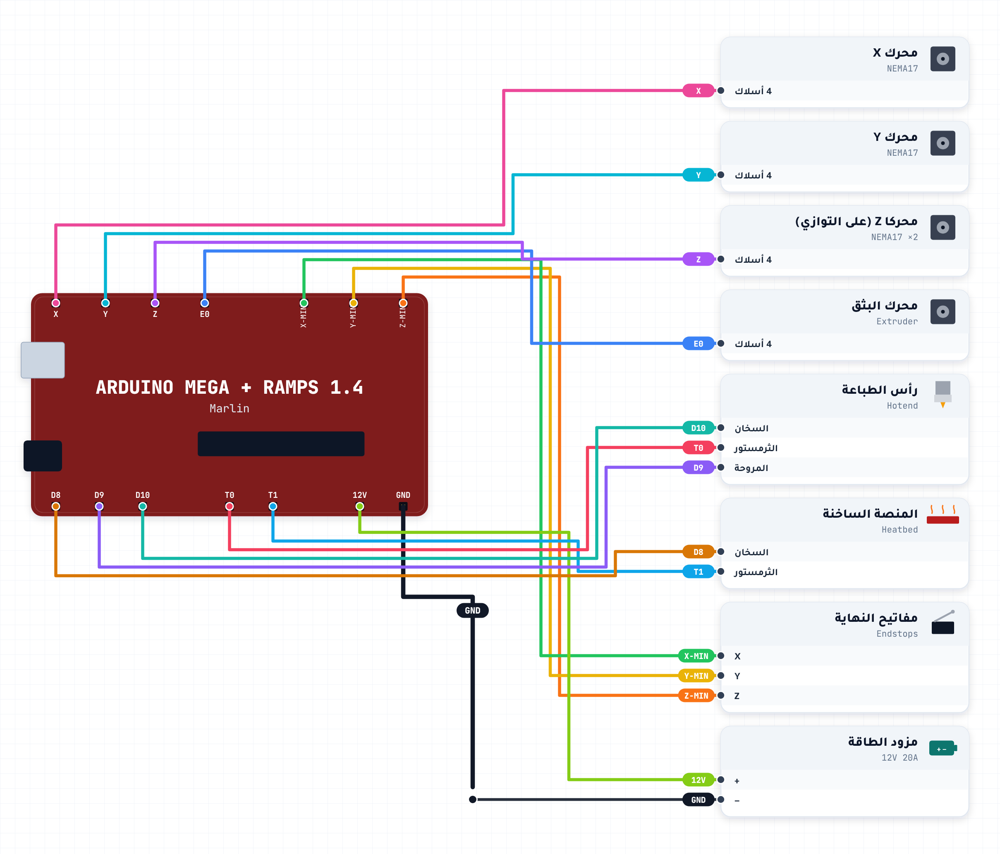

▶فيديو الشرح
طابعة ديكارتية على Arduino Mega و RAMPS 1.4: برنامج اختبار لكل الأجزاء، ثم إعدادات Marlin.
1المكونات
ARDUINO MEGA + RAMPS 1.4boardمحرك XNEMA17محرك YNEMA17محركا Z (على التوازي)NEMA17 ×2محرك البثقExtruderرأس الطباعةHotendالمنصة الساخنةHeatbedمفاتيح النهايةEndstopsمزود الطاقة12V 20Aأسلاك توصيلJumper Wiresلوحة تجاربBreadboard
2مخطط التوصيل

اضغط على المخطط لتكبيره · نسخة SVG عالية الدقة
| القطعة | الطرف | يوصل إلى |
|---|---|---|
| محرك X | 4 أسلاك | X |
| محرك Y | 4 أسلاك | Y |
| محركا Z (على التوازي) | 4 أسلاك | Z |
| محرك البثق | 4 أسلاك | E0 |
| رأس الطباعة | السخان | D10 |
| رأس الطباعة | الثرمستور | T0 |
| رأس الطباعة | المروحة | D9 |
| المنصة الساخنة | السخان | D8 |
| المنصة الساخنة | الثرمستور | T1 |
| مفاتيح النهاية | X | X-MIN |
| مفاتيح النهاية | Y | Y-MIN |
| مفاتيح النهاية | Z | Z-MIN |
| مزود الطاقة | + | 12V |
| مزود الطاقة | − | GND |
3الكود
لا يحتاج هذا المشروع إلى أي مكتبة إضافية.
/* المستوى المتطور — المشروع 8: الطابعة ثلاثية الأبعاد المصغرة (Arduino Mega + RAMPS 1.4) كتاب: 38 مشروع في شهر — لؤي النصري (@robotlouay) هذا "برنامج اختبار" لفحص كل أجزاء الطابعة قبل رفع البرنامج الثابت Marlin: يحرّك كل محرك، ويقرأ الحساسات الحرارية ومفاتيح النهاية، ويختبر المراوح. (إعدادات Marlin الأساسية في ملف marlin_settings.txt المرفق) منافذ RAMPS 1.4 القياسية (لا تحتاج توصيل أسلاك — كلها على اللوحة): X: STEP 54(A0) DIR 55(A1) EN 38 Y: STEP 60(A6) DIR 61(A7) EN 56(A2) Z: STEP 46 DIR 48 EN 62(A8) E0: STEP 26 DIR 28 EN 24 الحساس الحراري T0 (الرأس) → A13 T1 (المنصة) → A14 مخرج سخان الرأس D10 ، مروحة D9 ، سخان المنصة D8 مفاتيح النهاية: X_MIN → 3 Y_MIN → 14 Z_MIN → 18 ⚠ اختبار السخانات معطّل افتراضياً. لا تترك الطابعة تسخن دون مراقبة. */ struct Axis { const char* name; int step, dir, en; }; Axis axes[] = { {"X", 54, 55, 38}, {"Y", 60, 61, 56}, {"Z", 46, 48, 62}, {"E0", 26, 28, 24} }; const int X_MIN = 3, Y_MIN = 14, Z_MIN = 18; const int FAN = 9, HOTEND = 10, BED = 8; const int T0 = A13, T1 = A14; const bool TEST_HEATERS = false; // تحويل قراءة ثرمستور 100k (NTC 3950) مع مقاومة 4.7k إلى درجة مئوية float thermistorC(int pin) { float raw = analogRead(pin); if (raw <= 1 || raw >= 1022) return -999; // غير موصول float r = 4700.0 * raw / (1023.0 - raw); float t = 1.0 / (log(r / 100000.0) / 3950.0 + 1.0 / 298.15) - 273.15; return t; } void moveAxis(Axis a, long steps, bool dir) { digitalWrite(a.en, LOW); digitalWrite(a.dir, dir); for (long i = 0; i < steps; i++) { digitalWrite(a.step, HIGH); delayMicroseconds(500); digitalWrite(a.step, LOW); delayMicroseconds(500); } digitalWrite(a.en, HIGH); } void setup() { Serial.begin(115200); for (Axis a : axes) { pinMode(a.step, OUTPUT); pinMode(a.dir, OUTPUT); pinMode(a.en, OUTPUT); digitalWrite(a.en, HIGH); } pinMode(X_MIN, INPUT_PULLUP); pinMode(Y_MIN, INPUT_PULLUP); pinMode(Z_MIN, INPUT_PULLUP); pinMode(FAN, OUTPUT); pinMode(HOTEND, OUTPUT); pinMode(BED, OUTPUT); digitalWrite(HOTEND, LOW); digitalWrite(BED, LOW); Serial.println("== RAMPS 1.4 test =="); for (Axis a : axes) { // كل محرك يدور ذهاباً وإياباً Serial.print("Moving "); Serial.println(a.name); moveAxis(a, 1600, HIGH); moveAxis(a, 1600, LOW); } Serial.println("Fan test 3 s"); digitalWrite(FAN, HIGH); delay(3000); digitalWrite(FAN, LOW); } void loop() { Serial.print("Hotend: "); Serial.print(thermistorC(T0), 1); Serial.print(" C | Bed: "); Serial.print(thermistorC(T1), 1); Serial.print(" C | Endstops X:"); Serial.print(!digitalRead(X_MIN)); Serial.print(" Y:"); Serial.print(!digitalRead(Y_MIN)); Serial.print(" Z:"); Serial.println(!digitalRead(Z_MIN)); if (TEST_HEATERS) { // تسخين محدود إلى 50°C فقط float t = thermistorC(T0); digitalWrite(HOTEND, (t > -100 && t < 50) ? HIGH : LOW); } delay(1000); }
هذا المشروع يعتمد على مكتبات أو لوحات غير متوفرة في mBlock 5، لذلك نستعمل Arduino IDE. انسخ الكود من تبويب Arduino IDE.
4كيف يعمل؟
- برنامج الاختبار يحرك X و Y و Z والبثق
- يقرأ حرارة الرأس والمنصة
- يفحص مفاتيح النهاية والمروحة
- بعدها ارفع Marlin بالإعدادات المرفقة
⚠ قبل توصيل الكهرباء: راجع كل سلك مع الجدول أعلاه، وتأكد من عدم وجود تماس بين 5V و GND. اختر اللوحة والمنفذ الصحيحين من قائمة Tools في Arduino IDE.